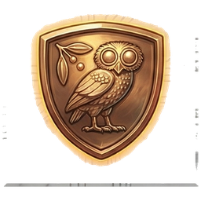
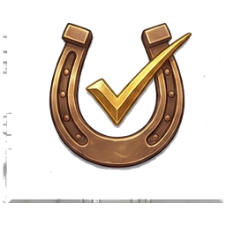
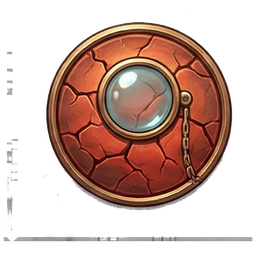
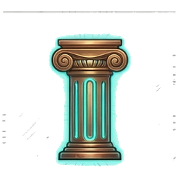
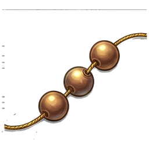

What If Your Code Wrote Itself?
Not the autocomplete-a-line kind. The "I woke up and three features were merged, tested, and deployed" kind.
Athena's Agora is an open-source system where AI agents do the actual work of software development — writing code, reviewing it, testing it, merging it — while a coordinator named Athena orchestrates from the middle like a very opinionated switchboard operator.
You tell her what needs building. She figures out how, dispatches the agents, catches them when they screw up, and delivers verified results. Sometimes you wake up to finished features. Sometimes you wake up to a detailed explanation of why the feature is a bad idea. (Both are valid outcomes.)
The secret? There's no magic. It's tmux sessions, bash scripts, quality gates, and an AI that takes the work personally. The magic is in how the pieces fit together — and the fact that you can set this up. Today. On hardware you already own.
Every tool has a name from Greek mythology. Not because we're pretentious (okay, maybe a little), but because the names fit. When your ops watchdog needs to be loyal and tireless, you don't call it monitor-v2. You call it Argus. And suddenly everyone knows exactly what it does.
Five Ideas. That's the Whole System.
Everything else is implementation detail.
Everything is a Bead
Every task, bug, feature, and "oh god what happened" is a bead on the loom. Agents create them, work them, close them. Athena makes sure they don't lie about it.
Agents Are Disposable
Spin up a coding agent, point it at a bead, let it run. When it's done — or when it's made a mess — kill it. Spin up a fresh one. No emotional attachment. No "let's see if it figures it out." Fresh context is a feature.
Nothing Passes the Gate
The centaur runs your tests, your linter, your anti-pattern scans. The full gauntlet. He doesn't care how clever the code is. If the tests don't pass, the gate doesn't open. He doesn't care about your deadline either.
The System Watches Itself
A faithful dog checks everything every five minutes. If something's wrong, it files a report and sometimes fixes the problem before you wake up. Best colleague you'll ever have. Never asks for treats.
Every Run Improves the Next
Success or failure, every agent run feeds data back into the templates. The system gets better by using itself. The serpent eats its tail. Flowers grow where it bites.
The Stack
Less glamorous than the mythology suggests. More powerful than you'd expect from this list.
tmux
Yes, really. Agents run in tmux sessions. It's not pretty, but it's observable, debuggable, and you can attach to any agent and watch it think in real time.
systemd
Argus, the gateway, and Relay all run as services. When something needs to run forever, you don't write a while loop. You write a unit file.
Git
Everything is version-controlled. Beads are stored in git. Agent work is branched and merged. If the VPS catches fire, we lose compute but not knowledge.
Claude + Codex
Claude Opus handles architecture and judgment. Codex handles implementation — fast and pattern-following. Haiku does the cheap work: Argus checks, quick scans, anything where speed matters more than depth.
Filesystem I/O
No database. No Redis. No message broker. Relay uses NDJSON files with flock-guarded atomic writes. 26,000 msgs/sec. The filesystem was always the right answer.
Bash + Go
Orchestration scripts in bash. Tools in Go. Templates in markdown. No framework. No build step. No dependency that weighs more than the tool it serves.
A Tuesday in the Agora
This actually happened. Most Tuesdays are like this.
orphan-process, and goes back to watching.
Meet the Agora
Every tool is a character. Every character has a story.
These are the people — and one very good dog — who run the system.

 The Agora
The Open City — Where Everything Gets BuiltAn open Greek civic space with marble columns threaded with circuits and floor mosaics that are half ancient geometry, half PCB traces. Little gladiator-builders run everywhere — carrying data tablets, constructing half-stone half-holographic structures. On a raised platform, Athena watches with the owl on her shoulder. Busy, alive, slightly chaotic.
"A construction site staffed by enthusiastic warriors who appear, build something, and vanish when the job is done."
athena-workspace →
 Argus
Argus
The Faithful Dog
In the Odyssey, Argus waited twenty years for Odysseus to come home. He was old, neglected, lying on a pile of dung — and he was the only one who recognized his master. Loyalty like that doesn't need a hundred eyes. It needs one good heart.
Our Argus watches the server every five minutes. Never complains. Fixes problems before you know they exist. Files neat reports. The best colleague you'll ever have, and he runs on a cron job.
"Argus doesn't sleep. Argus doesn't blink. Argus has opinions about your disk usage."
argus →
 Centurion
The Centaur at the GateHalf-wild, half-disciplined. A centaur in bronze armour standing before the gate to main. He runs your tests, your linter, your anti-pattern scans — the full gauntlet. He doesn't care about your feelings, your deadline, or your "it works on my machine."
Behind the gate: the main branch. Stable, tested, trusted. The centaur keeps it that way.
"Either your code is worthy, or the gate stays shut."
centurion.sh → Truthsayer
The Law KeeperEvery codebase has laws. Most code breaks them quietly — swallowed exceptions, silent fallbacks, tests that mock themselves. Truthsayer carries the Codex chained to his belt, 88 rules stitched into his robes, and a bronze monocle that sees what your linter won't.
He marks violations with his Red Quill. His ink is permanent. His cracked mirror shows the surface AND what's rotting underneath.
"He enforces the laws of the codebase. 88 rules. Zero tolerance."
truthsayer →
 Oathkeeper
Oathkeeper
The Binding Word
AI agents will confidently promise "I'll fix that in the next step" and then forget it ever happened. No guilt. No accountability. Just a broken promise buried in a transcript nobody reads.
Oathkeeper reads the transcripts. Finds the promises. Checks the receipts. The ancient Greeks swore by the River Styx, and if they broke that oath, even gods paid the price. We're less dramatic — but the principle holds.
"If you said you'd do it, we're going to check."
oathkeeper →
 Relay
Relay
Hermes — The Messenger God
Winged sandals. Caduceus in hand. The fastest god on Olympus and the only one who genuinely enjoyed the commute. Hermes carried messages between gods, between worlds, between the living and the dead. He was the original API.
Our Relay carries messages between agents. Filesystem-based, zero message loss, 26,000 msgs/sec under stress test. No broker. No queue. No "have you tried restarting RabbitMQ?"
"No relay, no coordination. No coordination, no strategy."
relay → Athena Web
The Loom RoomAthena was the goddess of weaving. This is her web — literally. A dashboard where you can see every agent, every bead of work, every document, every run. Stand before the loom and see the whole tapestry.
No build step. No framework churn. No webpack config that's older than your dependencies. Vanilla JS. SSE for real-time. It loads fast and stays out of your way. Revolutionary, we know.
"Where all the threads become visible."
athena-web →
 Ludus Magnus
Ludus Magnus
The Training Ground
The Ludus Magnus was the great gladiatorial training school next to the Colosseum. Fighters forged through repetition, evaluation, and ruthless selection. The ones who survived got better. The ones who didn't were replaced by their descendants.
Ludus Magnus does the same to AI prompts. Generate an agent, run it, score it, evolve it. Four parallel lineages competing. The prompts that work survive. Natural selection, applied to system prompts.
"You score, it evolves, you score again."
ludus-magnus →
 Learning Loop
Learning Loop
The Ouroboros — The Spiral Path
The serpent eating its own tail. Not death — perpetual self-renewal. Where it consumes itself, flowers grow.
Every agent run feeds data back into the templates. What worked gets amplified. What failed gets studied. Four nested loops — per-run, hourly, daily, weekly — each feeding the next. We started at 19% pass rate. The serpent is still eating. The garden is growing.
"Every ending feeds the next beginning."
learning-loop →
 Beads
The Loom's ThreadAthena was goddess of weaving. A loom has threads; threads are strung with beads. Each bead is a discrete unit of work — small, trackable, part of something larger. String enough together and you've woven something real.
Distributed, git-backed, agent-native. Created by Steve Yegge and adopted into the Agora because nothing else came close. Also: worry beads. Because tracking agent work will absolutely give you something to worry about.
"The work tracker that lives in your git repo."
beads (by Yegge) →The Honest Part
We could pretend this is a polished product. It isn't.
Here's what you're actually signing up for.
It runs on 8GB of RAM
A single VPS. Not a Kubernetes cluster. Not "the cloud" with air quotes. One box, in Helsinki, running fifteen things that probably shouldn't fit on 8GB. And yet.
Agents are brilliant interns with amnesia
Each one is incredibly capable for exactly one task. Then it finishes, and the next one arrives with absolutely no memory of what just happened. That's the design. You don't need continuity when you have good systems.
Some days are pure chaos
An agent refactors the test suite "while it's in there." Centurion rejects everything. Argus detects the CPU spike. You manage a cascade of well-intentioned destruction. Also beautiful, in its own way.
API credits are real money
This system calls AI models. A lot. If you're on a budget, start small. If you're on an unlimited plan, start medium. Nobody starts large and keeps their accountant happy. Nobody.
The point isn't that it's perfect. The point is that one person, one VPS, and a collection of tools with mythological names can ship software at a pace that would've required a team of ten two years ago.
That's not a pitch. That's a Tuesday. We showed you one.
Enter the Agora
You don't need permission. You don't need a team.
You need a Linux box, some API keys, and the willingness to let an owl manage your agents.
Set Up the Workshop
git clone https://github.com/Perttulands/athena-workspace.git ~/athena
cd ~/athena
./setup.shThis gets you the workspace, scripts, templates, and the skeleton. The setup wizard asks for your hostname and user — everything else has sensible defaults.
Install the Arsenal
# The watchdog
git clone https://github.com/Perttulands/argus.git ~/argus
# The anti-pattern scanner
go install github.com/Perttulands/truthsayer/cmd/truthsayer@latest
# The commitment tracker
go install github.com/Perttulands/oathkeeper/cmd/oathkeeper@latest
# The work tracker
npm install -g @beads/bd && bd initEach tool is standalone. Use one, use all, use whatever combination fits your workflow. They're better together, but they don't require each other.
Install OpenClaw
npm install -g openclaw
openclaw initOpenClaw is the gateway — the nervous system that connects your AI to the world. Messaging, scheduling, heartbeats, tool access. It's what makes the owl fly.
Make It Yours
Write your own SOUL.md. Name your AI. Pick an emoji. Give it opinions and a voice. The Athena mythology is ours — yours will be different, and it should be.
The system works the same whether your AI is named Athena, Odin, or Gerald.
Although, between us, "Gerald's Agora" doesn't quite have the same ring to it.
You Can Do This
This isn't for 10x engineers at FAANG companies with dedicated ML teams and infinite compute budgets.
This is for the person with a side project and a $20/month VPS. The freelancer who's tired of context-switching between five repos. The solo founder who needs to ship faster than humanly possible — so they made it not a human problem.
Every tool here is open source. Every tool is documented. Every tool was built by one person and an AI, on the same kind of hardware you probably already have.
The mythology isn't gatekeeping. It's an invitation. Come build something. Name your tools. Give your AI a soul. The agora is open. The owl is watching. There's room to build.